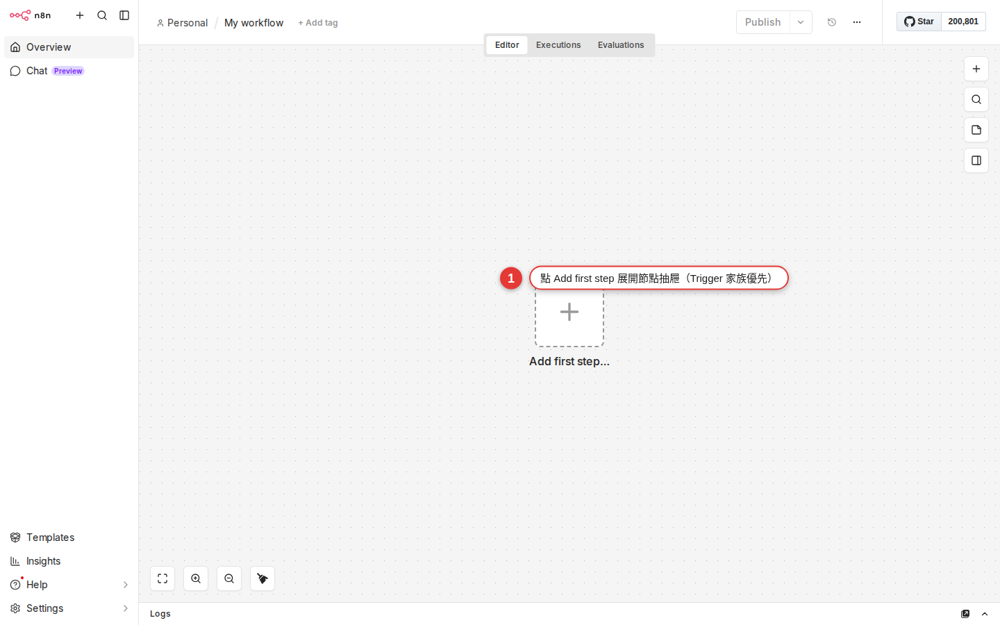

The four node families: Trigger / Core / App / Cluster
Over the first six chapters you have learned to sign in to n8n, find your way around the workspace, and copy someone else's workflow and edit it. From this chapter on you start building your own — but before you build anything, you need to be able to read the nodes panel. The official docs split nodes into four families: Trigger (the start), Core (built-in flow and data tools), App (the ones that talk to outside services) and Cluster (the group structure AI Agent uses — one root node with a pile of sub-nodes hanging under it). The first three are the skeleton of traditional automation; the fourth is the newer architecture behind the whole LangChain set of AI nodes that arrived after 2024. By the end of this chapter you can sort any node in any workflow into a family in two seconds.
Why start by sorting nodes into families
You met the nodes panel back in Chapter 3 — press + on an empty spot on the canvas, or click Add first step in the right-hand panel, and a list slides in from the right. The amount of stuff inside is frightening:
- 400+ official nodes (Slack, Gmail, Notion, Airtable, HubSpot, Stripe, GitHub…)
- 30+ Core nodes (IF, Switch, Merge, Edit Fields, Code, Wait, HTTP Request…)
- A whole separate row of Trigger nodes (Schedule, Webhook, and a Trigger version bundled with every SaaS)
- Plus the entire AI / LangChain set (AI Agent, Chat Model, Memory, Vector Store…)
You do not have to memorize these hundreds of names. What you actually need is this — see a node and know within two seconds which family it belongs to and what it does. That is what keeps someone else's workflow from looking like fog, and it is how you know which part of the panel to head for when you build your own.

The conclusion first, one line each (they match the four folders under the official docs.n8n.io/integrations/builtin/) —
- Trigger (a functional category) = the "start" of a workflow; it decides when the workflow runs; no input dot on the left
- Core nodes (
core-nodes/) = n8n's built-in flow, data and general-purpose tools (IF, Merge, Set, Code, HTTP Request, Wait, Schedule Trigger…) - App nodes (
app-nodes/, which the docs also call Actions) = one node per outside SaaS (Slack, Gmail, Notion…) - Cluster nodes (
cluster-nodes/) = group nodes used only by AI / LangChain: one root node (for example AI Agent) carrying several sub-nodes (Chat Model, Memory, Tool, Vector Store)
Schedule Trigger, Manual Trigger, Chat Trigger and Webhook actually live under core-nodes/ — they are both Trigger (the function) and Core (the category). The two dimensions cross; this is not a mutually exclusive pick-one-of-four.The next four sections take them one at a time.
Trigger nodes: where a workflow starts
Every workflow needs a starting point, and that starting point is the Trigger node — it decides when this workflow runs. The first groups you see when you open the nodes panel are usually On app event / On a schedule / When called by another workflow, and all of them are Triggers.
Trigger nodes have one visual giveaway: there is no input dot on the left. It is the starting point, so there is nothing upstream to connect to. On the right there is one output dot that sends data downstream.
| Trigger node | When it runs | Typical use |
|---|---|---|
| Manual Trigger | Only when you press Execute Workflow |
Testing, building, and workflows a person clicks by hand |
| Schedule Trigger | Like cron: at the times you set (hourly, every day at 8:00, every Monday…) | Daily reports, weekly roundups, monthly closing |
| Webhook | When an outside system calls the URL | A submitted form, a LINE bot, an HA trigger, a third-party callback |
| App Event (Gmail Trigger, Slack Trigger…) | When something happens in the SaaS you picked | Forward a VIP email when it lands, get a notification when a keyword is mentioned in Slack |
| Chat Trigger | When a user types in the chat interface | Used when AI Agent (ch21) is building a support bot |
| Execute Workflow Trigger | When another workflow calls it | A sub-workflow pulled out for reuse (ch19) |
Triggers are easy to find in the panel too — the first page of the nodes panel defaults to Triggers, and when you press + on an empty spot on the canvas to start a new workflow, n8n steers you straight to picking a Trigger (without one there is no starting point, and the workflow cannot run at all).
App nodes (actions): the nodes that talk to outside services
App nodes are the largest of the four families — the docs keep them under integrations/builtin/app-nodes/, and the panel labels them Actions in apps. What they share: each node maps to one outside service (a SaaS, a database, a cloud provider), and the node wraps every operation that service's API offers.
If you have used Zapier the idea is identical — in Zapier each app maps to an action, and in n8n each SaaS maps to one App node. "App node" is the docs' file name and "Action" is the panel's UI label, so the two mean the same thing and you do not need to worry when this guide uses both.
One Action node usually holds many sub-operations. Take Slack —
- Send Message: post a message to a channel or a person
- Update Message: edit a message you already sent
- Delete Message: delete a message
- Get Channel: fetch a channel's details
- Invite User: invite someone into a channel
- …and about 20 more operations
You do not have to memorize every sub-operation up front. Once the Slack node is on the canvas, the Operation dropdown on the right lists every option; pick the one you want.
The docs group Action nodes into roughly these categories, and every one of them has its place in the panel:
| Category | Common nodes | Typical scenario |
|---|---|---|
| Communication | Slack, Discord, Telegram, Email, LINE | Notifications, broadcasts, chatbots |
| Data & Storage | Google Sheets, Airtable, Notion, Postgres, Redis, MongoDB | Write to a sheet, query a database, build a data pipeline |
| Productivity | Google Calendar, Todoist, Trello, Asana, ClickUp | Create events, open tasks, track progress |
| Marketing | HubSpot, Mailchimp, SendGrid, ActiveCampaign | Add leads, send newsletters, follow customer activity |
| AI (the App version) | OpenAI, Anthropic, Google Gemini, Perplexity (filed under app-nodes/n8n-nodes-langchain.*) |
A single LLM call to write copy, summarize or translate; these are different nodes from the Cluster-version AI Agent in the next section |
| Developer | GitHub, GitLab, Jira, Bitbucket, Docker Hub | Open issues, create PRs, send CI notifications |
| Files & Cloud | Google Drive, Dropbox, OneDrive, AWS S3 | Upload attachments, back things up, move files between clouds |
The visual giveaway for App nodes: a dot on each side (the left one takes data from upstream, the right one sends it downstream), and the icon is usually that service's own logo (Slack's purple hash, Gmail's red envelope, Notion's black-and-white page). Once you see the logo you know whose node it is.
Slack, which calls the Slack API itself) and the Trigger version (for example Slack Trigger, which sits and listens for a Slack webhook). The names look alike but the jobs are opposite, so pick carefully.Core nodes: built-in flow, data and utility tools
Core nodes are n8n's own built-in set of nodes (the docs file them under core-nodes/). There are fewer of them than App nodes, but every one matters. Their job is managing the data flow and control flow inside a workflow, plus general-purpose tools that are not tied to any SaaS — the tees, valves and switches of the plumbing, plus a skeleton key like HTTP Request.
The category names in the panel have changed a few times in recent versions: they used to be Core Nodes, then split into Flow / Data Transformation / Files / Helpers (the exact wording varies a little with your n8n version). When you cannot tell them apart, search instead.
core-nodes/ in the docs tree as well — because they are built into n8n and tied to no SaaS. That is the proof that "Trigger" is a functional role and "Core" is a file category: one node can carry both labels.| Core node | What it does | Chapter that covers it |
|---|---|---|
| IF | Conditional branching (true takes one path, false takes the other) | Chapter 15 |
| Switch | Several branches (different paths depending on a field's value) | Chapter 15 |
| Merge | Bring several streams of data back into one (append / combine / choose) | ch16 |
| Split In Batches | Handle a big pile of items in batches so you do not blow through an API rate limit | ch16 |
| Item Lists | Array operations (deduplicate, sort, aggregate, split out) | ch16 |
| Set / Edit Fields | Add fields, rename fields, reorder them, flatten them | Chapter 18 |
| Code | A few lines of JavaScript or Python to fill the gaps the ready-made nodes leave (the old name was Function, folded into Code in n8n 1.0; the docs' Function page is now a 404) |
ch20 |
| Wait | Pause for a while (wait 5 seconds, wait until 9:00 tomorrow, wait for a webhook) | ch17 |
| Execute Workflow | Call another workflow (a sub-workflow) | ch19 |
| HTTP Request | Call any REST API (the skeleton key for when there is no official node) | Chapter 12 |
The visual giveaway for Core nodes: a dot on each side (IF and Switch branch, so they carry several output dots on the right), and the icon is abstract geometry — a forking arrow for IF, converging arrows for Merge, a pen or field icon for Set, angle brackets </> for Code. A node with no SaaS logo is almost certainly Core.
Cluster nodes: the whole AI Agent group
The docs file Cluster nodes under integrations/builtin/cluster-nodes/ as the fourth family, and they are the biggest architectural change in the n8n ecosystem since 2024. A cluster is not one node but a group of nodes — every cluster has one root node (the main node, for example AI Agent) with several sub-nodes attached below it to supply capabilities.
A typical structure looks like this (an AI Agent root with four kinds of sub-node under it) —
| Where | Node type | Typical example | What it does |
|---|---|---|---|
| Root (one of them) | AI Agent, Basic LLM Chain, QA Chain, Summarization Chain, Text Classifier, Information Extractor, Sentiment Analysis | AI Agent |
The cluster's main logic; the normal data flow comes in on the left and leaves on the right |
| Sub-node (several) | Chat Model | OpenAI Chat Model, Anthropic Chat Model, Google Gemini Chat Model, Groq, Ollama | Attaches to the ai_languageModel connector dot on the root's underside and supplies the reasoning engine |
| Sub-node | Memory | Simple Memory, Postgres Chat Memory, Redis Chat Memory, Zep | Attaches to the ai_memory dot so the agent remembers the previous turn of the conversation |
| Sub-node | Tool | Calculator, Wikipedia, SerpAPI, Code Tool, HTTP Request Tool, or any App node attached as a Tool | Attaches to the ai_tool dot; the agent decides when to call which tool |
| Sub-node | Vector Store / Retriever / Embeddings / Output Parser | PGVector, Pinecone, Simple Vector Store, OpenAI Embeddings, Structured Output Parser | Attaches to the matching ai_* dot to do RAG, embeddings and structured output |
Cluster nodes are very easy to spot — the root node grows a row of square, downward-facing connector dots along its underside (not the left-and-right round dots of Trigger / App / Core), each one labeled Chat Model / Memory / Tool / Vector Store. Attach the matching sub-node from below and n8n treats the cluster as complete and ready to run.
app-nodes/, one call at a time) and Cluster-version AI (AI Agent plus a stack of ai_* sub-nodes, filed under cluster-nodes/). The panel does put them under an AI or Advanced AI label so they are easy to browse, but underneath there are only those two file categories.Chapter 21 takes apart the full root-plus-sub arrangement and the details of the ai_* connector dots. For this chapter, just remember: a node with several downward dots on its underside = a Cluster root, and whatever snaps up under those dots = a sub-node.
How to tell which family a node belongs to
Now that you know the four families, the skill that pays off in practice is classifying a node at a glance. Check these four features and you have the answer in a second —
-
Look underneath for
ai_*dots → Cluster rootA node with a few square downward dots along its underside, labeled
Chat Model/Memory/Tool/Vector Store, is a Cluster root node (AI Agent, Basic LLM Chain, QA Chain and so on). The other way round: a node with only one upward dot on top, waiting to be picked up by a root, is a sub-node (Chat Model, Memory, Tool and so on). -
Look on the left for an input dot → Trigger
No dot on the left (only a line leaving on the right) → it is definitely a Trigger. A node sitting alone at the far left of the canvas with nothing wired in front of it is a Trigger. The name usually carries "Trigger" or "On..." (
Slack Trigger,Schedule Trigger,Webhook,On form submission). -
Look at the icon: a SaaS logo or abstract geometry → App or Core
A dot on each side and a service's logo for an icon (Slack's purple hash, Gmail's red envelope, Notion's black-and-white page) → almost certainly an App node. An abstract geometric icon (a fork, a confluence, a gear, angle brackets) → almost certainly a Core node.
-
Look at the panel's own categories
The nodes panel is already sorted for you: Triggers, Actions in apps (App nodes grouped by service), Core (with the Flow / Data Transformation / Files / Helpers sub-areas) and AI or Advanced AI (Cluster nodes). When you cannot tell, go back to the panel and see which label it sits under.
The rhythm most workflows follow
How do the four families combine in a real workflow? From the shortest to the most complex, there are roughly four rhythms:
-
Shortest: Trigger → 1 App node
"Post the same message to Slack every morning at 8:00" —
Schedule Triggerwired toSlack (Send Message), done. Two nodes and one line: the simplest shape a workflow takes. Good for nudges and reminders. -
Common: Trigger → App that reads → Core that filters → App that writes → App that notifies
"Every morning, fetch the support tickets, keep only the urgent ones, write them into Notion and tell the sales manager" —
Schedule Trigger→HTTP Request（讀 ticket API）→IF（priority == urgent）→Notion（新增頁）→Slack（通知）. This is the classic five-node workflow, and 80% of a company's automation looks like this. -
AI: Chat Trigger → AI Agent (Cluster) → reply
"A customer types in the web chat → the AI support agent answers" —
Chat Trigger→AI Agent, withOpenAI Chat Model(reasoning) +Simple Memory(remembering the conversation) +Wikipedia Tool(looking things up) +HTTP Request Tool(calling an internal API) attached under the AI Agent. On screen it looks like one node sprouting four tendrils, which is the classic cluster shape. -
Complex: several Triggers → IF branches → parallel App nodes → Merge → sub-workflow → error handling
"A new customer arrives (three Triggers: Webhook + Manual + Schedule) → route by country → in parallel, send the welcome email / add them to the CRM / open a Slack channel → merge back into the main line → call the 'send an alert' sub-workflow → on failure retry 3 times automatically, and if it still fails tell IT." You will only meet 15-plus-node workflows like this in the later chapters, so there is nothing to be afraid of.
The pattern shows: usually one Trigger (sometimes several), App nodes doing the heavy lifting (over 60% of the node count), Core nodes as the pipe fittings that join the App nodes up (IF decides which way to go, Set reshapes the data, Merge brings the lines together), and Cluster as the AI-only "one node with several tendrils" structure.
The fastest way to find a node in the panel
Knowing the categories is what lets you read a workflow, but in practice you will never scroll through them one by one to find a node. Typing a keyword beats everything else.
-
Type the service name: Slack, Sheet, Gmail, Notion
There is a search box at the top of the panel. Type
slackand it filters down to the Slack-related nodes (both Slack and Slack Trigger show up). That finds 99% of the integrations you use. -
Type a function word: if, set, code, wait, http
Core nodes have no service name, so search by what they do. Type
ifand you get IF and Switch; typesetand you get Set / Edit Fields; typehttpand you get HTTP Request. -
Nothing found → it may be a community node (community package)
A more niche service (a Taiwan-only SaaS, say) may have no official node, but n8n has a community nodes mechanism — an admin has to install the package on the back end. That is an advanced operation, so ask IT to install it for you.
-
No node for that SaaS at all → call it yourself with HTTP Request
Nothing official and nothing from the community? Fine — as long as that service has a REST API, use the HTTP Request node (Chapter 12) and fill in the URL, method, header and body from its API docs. This is n8n's skeleton key: if they have an API, you can reach it.
Troubleshooting
These are the situations people hit most often when they first work with the nodes panel:
-
The nodes panel will not open
There are two ways in: press + on an empty spot on the canvas, or, in a new workflow, click Add first step in the right-hand panel. If there are already nodes on the canvas, hover over the dot on a node's right side and a + appears; clicking that opens the panel too, and wires the new node in behind that one.
-
Too many categories to find anything
Do not scroll page by page — type a keyword straight into the search box at the top. The categories are designed for people browsing; in practice, searching is the fastest route.
-
I typed the node I want and nothing came up
Three possibilities: (1) the spelling does not match — if
google sheetsfinds nothing, trysheets; (2) it may be a community node, which an admin has to install as a community package on the back end; (3) the service has no official node — in which case use HTTP Request (Chapter 12) against its API. -
The node was renamed and you cannot find it (Function → Code, Set → Edit Fields)
n8n renames nodes from time to time. The two you meet most: the Function node was replaced entirely by Code in v1, the docs' Function page is now a 404, and older workflows are migrated automatically or marked legacy on import;
Setis now calledEdit Fields (Set). When a name from an older tutorial finds nothing, type the new name (Code, Edit Fields). -
You picked a SaaS App node but there is no input dot on the left
You have probably picked the service's Trigger version (
Slack Triggerinstead ofSlack). Delete it and pick the plain App version — searchingslackbrings up both nodes, so choose the one without "Trigger" in the name. -
You added a Core node and do not know where to wire it
Core nodes usually sit in the middle of a workflow (between the Trigger and the final App node). Put IF where you want the branch, Set where you want to reshape the data, Merge where the lines come back together. A Core node on its own does nothing; it only means something sandwiched between other nodes.
-
You added AI Agent, pressed Execute, and got "no language model"
AI Agent is a Cluster root node, and it must have a sub-node (OpenAI Chat Model, Anthropic Chat Model or similar) attached to the
Chat Modeldot on its underside before it can run. Same story if you enable Memory / Tool without attaching the matching sub-node: you get an error about an empty connector. An AI Agent on its own will not move.
FAQ
How many kinds of node does n8n have in total?
n8n officially supports 400+ nodes (the list at n8n.io/integrations), and community packages add several hundred more. In practice 80% of automation uses fewer than 20 nodes, so do not let the number scare you.
Which ones do people actually use most?
From what we see inside WoowTech, these 8 nodes cover 80% of workflows:
- Schedule Trigger (Trigger / Core) — runs on a schedule
- Webhook (Trigger / Core) — outside systems call in
- Slack (App) — notifications
- Gmail (App) — sending mail
- Google Sheets (App) — keeping records
- HTTP Request (Core) — calling any REST API
- IF (Core) — conditional branching
- Edit Fields (Set) (Core) — reshaping data
Get comfortable with these 8 and you can hold your own at work.
Which family does the AI Agent node belong to?
The fourth family — Cluster nodes. The docs put it squarely at integrations/builtin/cluster-nodes/root-nodes/n8n-nodes-langchain.agent. AI Agent is the root, and it only moves once sub-nodes (Chat Model, Memory, Tool, Vector Store) are attached below it. The panel usually files it under an AI / Advanced AI label for easy browsing, but the underlying file category is cluster. Chapter 21 takes the full arrangement apart.
While we are here: the OpenAI, Anthropic and Google Gemini nodes that make a single LLM call are not clusters. They are App nodes (filed under app-nodes/n8n-nodes-langchain.*), on a different layer from AI Agent.
Do new node versions replace the old ones?
n8n ships a new version of a node now and then (Google Sheets has a v1 and a v2; the Set node was renamed Edit Fields after v1). The old version is normally kept so existing workflows do not break; for anything new, use the newer version — it is more complete and its bug fixes are fresher. Searching sheets in the panel brings up both the old and the new one, so pick the newest.
What is the difference between a Trigger node and an App node?
A Trigger listens (the time comes round, a webhook arrives, something happens in a SaaS) and starts the workflow by itself. An App node acts (posts a message, writes a row, creates an account) and only runs once something upstream has handed it data. Visually, a Trigger has no dot on the left and an App node has a dot on each side. One SaaS usually ships both: Slack Trigger listens for Slack events, and Slack calls Slack.
Do Core nodes talk to SaaS services?
Most do not — IF, Set, Merge, Wait and Code work purely on the data flow and control flow inside the workflow. A few Core nodes do reach outside: HTTP Request (calls any REST API), SSE Trigger / Webhook (listen for something coming in), Email (Send) / FTP (general protocols). None of these count as "App nodes", because an App node is defined as "one node per SaaS"; these are general networking tools, so they belong to Core.
Is the Function node still around?
No. The Function node was replaced entirely by the Code node in n8n v1 (2023-07) — same job, but with Python support — and the docs page at core-nodes/n8n-nodes-base.function/ is now a 404. Older workflows imported into v1+ are migrated automatically or marked legacy. For anything new, always use Code.
Where do I look up node details in the docs?
Two places: (1) for integration nodes, n8n.io/integrations, where every SaaS has its own page listing all its operations and parameters; (2) for Core nodes, docs.n8n.io/integrations/builtin/core-nodes/, where the docs cover each Core node's details and examples.
What do I do next?
Go to Chapter 8 and build your first workflow from scratch: Schedule Trigger (every day at 8:00) → Google Calendar (fetch today's events) → Slack (post a message). That is exactly the shortest rhythm — a Trigger plus 2 App nodes — so you meet the first three of the four families from this chapter; Cluster comes in Chapter 21.